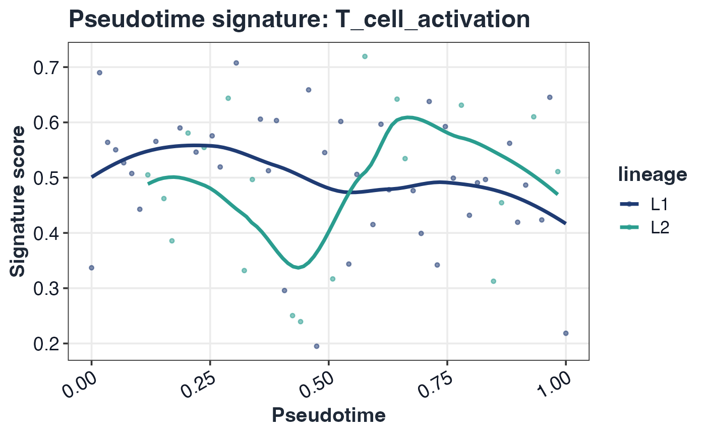

GLEAM trajectory mapping and testing
Source:vignettes/GLEAM_trajectory_mapping.Rmd
GLEAM_trajectory_mapping.RmdGeneric trajectory input
traj_tbl <- as_trajectory_data(sc, pseudotime = "pseudotime", lineage = "lineage")
head(traj_tbl)
#> cell_id pseudotime lineage
#> toy_cell_001 toy_cell_001 0.00000000 L1
#> toy_cell_002 toy_cell_002 0.01694915 L1
#> toy_cell_003 toy_cell_003 0.03389831 L1
#> toy_cell_004 toy_cell_004 0.05084746 L1
#> toy_cell_005 toy_cell_005 0.06779661 L1
#> toy_cell_006 toy_cell_006 0.08474576 L1Trajectory differential testing
tr <- test_signature_trajectory(sc, pseudotime = "pseudotime", lineage = "lineage", method = "spearman", verbose = FALSE)
head(tr$table)
#> pathway comparison_type group1 group2 celltype level
#> 1 T_cell_activation trajectory pseudotime <NA> L1 trajectory
#> 2 Cytotoxicity trajectory pseudotime <NA> L1 trajectory
#> 3 IFN_response trajectory pseudotime <NA> L1 trajectory
#> 4 Antigen_presentation trajectory pseudotime <NA> L1 trajectory
#> 5 Exhaustion trajectory pseudotime <NA> L1 trajectory
#> effect_size median_group1 median_group2 diff_median p_value p_adj
#> 1 -0.1287875631 0.5092437 NA -0.1287875631 0.32674526 0.5445754
#> 2 0.2155440706 0.5126050 NA 0.2155440706 0.09813146 0.4906573
#> 3 -0.0910631918 0.5058824 NA -0.0910631918 0.48895365 0.6111921
#> 4 -0.0008058018 0.5142857 NA -0.0008058018 0.99512463 0.9951246
#> 5 0.1669237083 0.5285714 NA 0.1669237083 0.20239718 0.5059929
#> n_group1 n_group2
#> 1 60 NA
#> 2 60 NA
#> 3 60 NA
#> 4 60 NA
#> 5 60 NATrajectory visualizations
plot_pseudotime_score(sc, pathway = rownames(sc$score)[1], pseudotime = "pseudotime", lineage = "lineage")
Optional backend object integration
# Monocle2 (monocle package)
# tr_m2 <- test_signature_trajectory(sc, pseudotime = cds_monocle2, lineage = cds_monocle2, method = "spearman")
# Monocle3
# tr_m3 <- test_signature_trajectory(sc, pseudotime = cds_monocle3, lineage = "lineage", method = "spearman")
# slingshot
# tr_sl <- test_signature_trajectory(sc, pseudotime = sds, lineage = sds, method = "spearman")